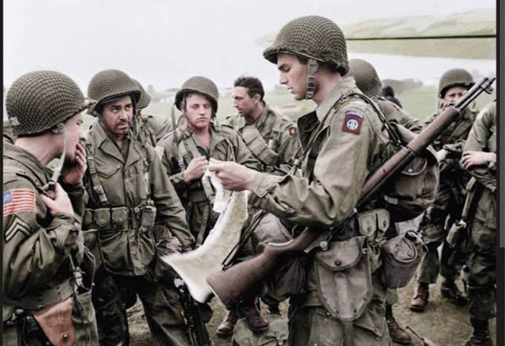
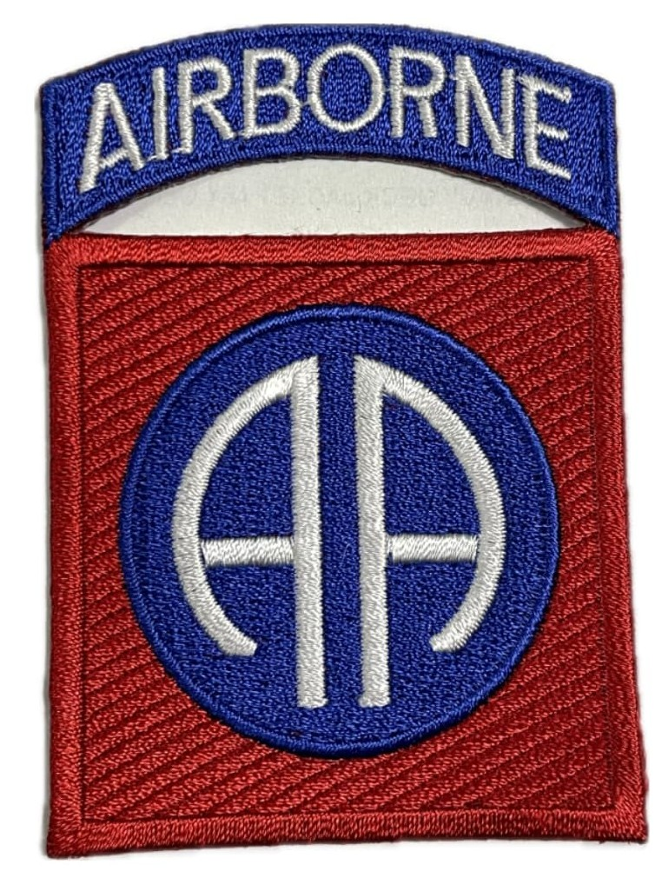
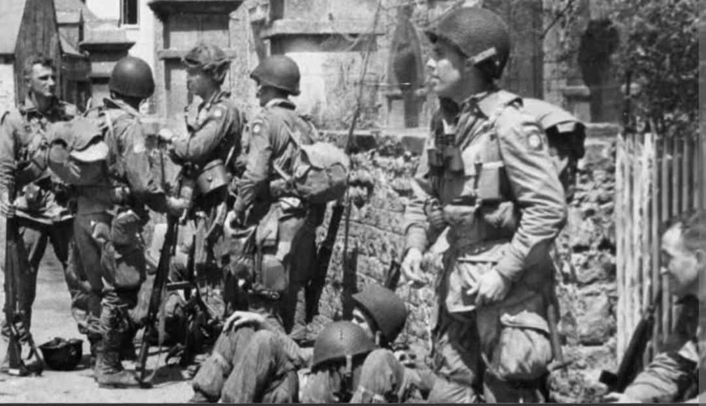

De la Sicile à Sainte-Mère-Église, la traversée héroïque de la Waal et les stalles polaires des Ardennes

Surnommée les « All American », la **82nd Airborne Division** de l'US Army est l'une des unités aéroportées les plus légendaires et décorées de l'histoire militaire moderne.
Pionnière des opérations aéroportées de grande envergure, la 82e Division a mené quatre saut d'assaut majeurs (Sicile, Salerne, Normandie et Pays-Bas), s'illustrant de la libération de **Sainte-Mère-Église** à la féroce traversée de la Waal à Nimègue.
Créée en août 1917 durant la Première Guerre mondiale, la division tire son surnom *All American* du fait que ses premiers membres provenaient des 48 États de l'Union américaine. Son insigne emblématique se compose d'un écusson carré rouge contenant un cercle bleu chargé du double monogramme blanc **« AA »**. La languette supérieure noire porte la mention **AIRBORNE**.
Convertie en première division aéroportée de l'histoire de l'US Army en août 1942 sous le commandement du général **Omar Bradley** puis du général **Matthew Ridgway**, elle est ensuite dirigée pendant la campagne européenne par le général **James M. Gavin** (le plus jeune général de division de l'armée américaine).

En juillet 1943, le 505th Parachute Infantry Regiment mène le premier parachutage de nuit à l'échelle d'une brigade lors de l'**Opération Husky** en Sicile, suivi du saut de secours à Salerne en septembre 1943.
Dans la nuit du 5 au 6 juin 1944 (**Opération Neptune**), les paras de la 82nd Division sautent au cœur du Cotentin. Malgré des parachutages dispersés dans les marais du Merderet, ils s'emparent de la ville clé de **Sainte-Mère-Église** (première ville libérée de Normandie continentale) et verrouillent les ponts stratégiques pour sécuriser la tête de pont d'Utah Beach.

Le 17 septembre 1944, la division saute sur les Pays-Bas dans le cadre de l'**Opération Market Garden**. Elle capture les ponts de Grave et de Nimègue, s'illustrant lors de la légendaire traversée de la Waal en canots en plein jour sous le feu ennemi par le 504th PIR.
Pricipitée dans les **Ardennes** en décembre 1944, la 82nd Division bloque l'avance du SS-Panzerkorps le long de la Salm et à Vielsalm. En mai 1945, la division franchit l'Elbe, libère le camp de concentration de Wöbbelin et accepte la capitulation de la 21e Armée allemande.
Au cours de ses 422 jours de combat, la 82nd Airborne Division enregistre plus de **16 100 pertes au combat** (dont environ 3 220 tués).
Quatre de ses parachutistes ont reçu la prestigieuse Medal of Honor. Surnommée « America's Guard of Honor », la division est choisie pour représenter l'armée américaine lors du défilé de la victoire à Berlin en 1945.
Page du Musée HOP WW2 – Section Unités & Divisions Célèbres